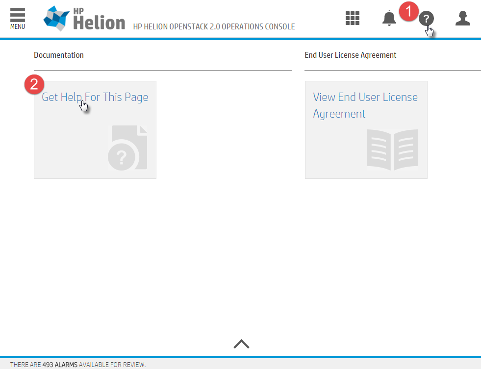

The Operations Console (Ops Console) for HPE Helion OpenStack 2.0 is designed for HPE Helion OpenStack Administrators to have a web-based UI they can use to view data about their cloud infrastructure. The Ops Console is a web-based GUI that offers the user access to data such as monitoring alarms data by service, performance data, compute nodes and instances lists, and a drilldown to Kibana for a deep look into logs. The Business Logic Layer is a middleware component that serves as a single point of contact for the UI to communicate with OpenStack services such as Monasca, Nova, and others.
If your administrator set a hostname value for external_name in your network_groups.yml file during the configuration process for your cloud then the Operations Console will be accessed over port 9095 on that hostname.
grep vip-HZN-WEB /etc/hosts
http://VIP:9095
The default username for the Administrator user is admin. In order to find the randomized password that is created for this user you will need to look into the ~/service.osrc file on the deployer/lifecycle-manager node. You can do that with this command:
cat ~/service.osrc
On each of the Operations Console pages there is a help menu that you can click on to take you to a help page specific to the console you are currently viewing.
To reach the help page:
